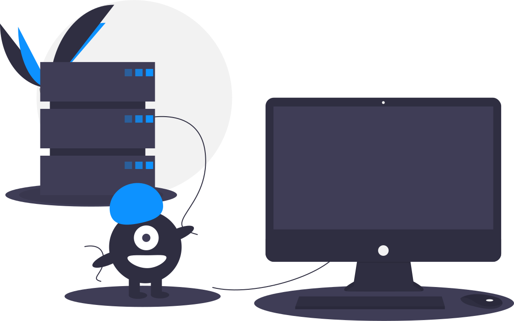

Loading...

Server Connection is down.
Please try again later

{{serviceRequest.doNo}}
{{serviceRequest.dateCreated | date:'longDate'}}
Service Requests
{{serviceRequest.doNo}}
{{serviceRequest.dateCreated | date:'longDate'}}